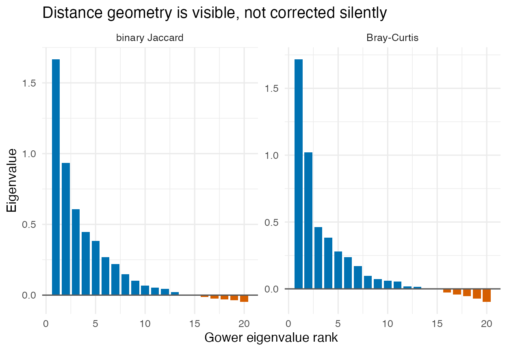
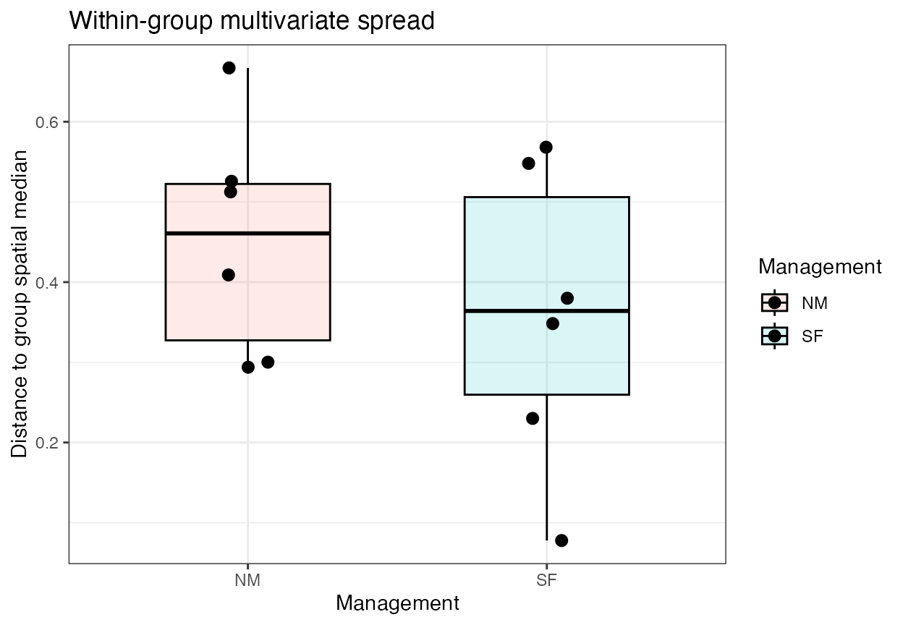

dispersion.RmdThe vignette separates three checks that are often conflated:
bray <- vegdist(dune, method = "bray")
jaccard <- vegdist(dune, method = "jaccard", binary = TRUE)
bray_diag <- distance_diagnostics(bray)
jaccard_diag <- distance_diagnostics(jaccard)
data.frame(
distance = c("Bray-Curtis", "binary Jaccard"),
negative_axes = c(bray_diag$negative_count, jaccard_diag$negative_count),
negative_to_positive_inertia = c(
bray_diag$negative_ratio, jaccard_diag$negative_ratio
),
euclidean = c(bray_diag$euclidean, jaccard_diag$euclidean)
) |>
kbl(digits=3) |>
kable_styling(bootstrap_options = c("striped", "hover", "condensed")) | distance | negative_axes | negative_to_positive_inertia | euclidean |
|---|---|---|---|
| Bray-Curtis | 5 | 0.064 | FALSE |
| binary Jaccard | 6 | 0.031 | FALSE |
distance_diagnostics() applies the same Gower-centring
operation to every valid symmetric dissimilarity matrix,
What is not fixed across distances is the geometry
produced by that operation. A Euclidean distance gives a positive
semi-definite G; many useful ecological dissimilarities
give some negative eigenvalues. distmer retains those
signed contributions instead of silently discarding them. The negative
inertia ratio is a diagnostic, not an automatic reason to abandon
Bray–Curtis.
spectrum_data <- rbind(
data.frame(distance = "Bray-Curtis", axis = seq_along(bray_diag$eigenvalues),
eigenvalue = bray_diag$eigenvalues),
data.frame(distance = "binary Jaccard",
axis = seq_along(jaccard_diag$eigenvalues),
eigenvalue = jaccard_diag$eigenvalues)
)
ggplot(spectrum_data, aes(axis, eigenvalue, fill = eigenvalue < 0)) +
geom_col(width = 0.8, show.legend = FALSE) +
geom_hline(yintercept = 0, colour = "grey35") +
facet_wrap(~ distance, scales = "free_y") +
scale_fill_manual(values = c("#0072B2", "#D55E00")) +
labs(title = "Distance geometry is visible, not corrected silently",
x = "Gower eigenvalue rank", y = "Eigenvalue")
Large negative contributions deserve investigation: check transformations, zero-heavy samples, data errors, and whether another ecological distance better matches the question. Any correction or alternative distance should be reported as a sensitivity analysis because it changes the geometry being tested.
Example using the balanced NM and SF management subsets of
dune dataset (n=6 per group). The location model asks
whether the group centres differ. The dispersion model asks whether
observations differ in their average distance to their own group
centre.
selected <- dune.env$Management %in% c("NM", "SF")
community <- dune[selected, ]
env <- droplevels(dune.env[selected, , drop = FALSE])
subset_bray <- vegdist(community, method = "bray")
table(env$Management) |>
kbl(digits=3) |>
kable_styling(bootstrap_options = c("striped", "hover", "condensed")) | Var1 | Freq |
|---|---|
| NM | 6 |
| SF | 6 |
location <- permanova(
subset_bray ~ Management, env, permutations = 999, seed = 82
)
dispersion <- permanova_dispersion(
subset_bray ~ Management,
env,
term = "Management", type = "median",
permutations = 999, seed = 82
)
location$table[1, c("Pseudo-F", "P(perm)")] |>
kbl(digits=3) |>
kable_styling(bootstrap_options = c("striped", "hover", "condensed")) | Pseudo-F | P(perm) |
|---|---|
| 3.426 | 0.006 |
dispersion$table[1, c("pseudo_f", "p_perm")] |>
kbl(digits=3) |>
kable_styling(bootstrap_options = c("striped", "hover", "condensed")) | pseudo_f | p_perm |
|---|---|
| 0.917 | 0.344 |
disp_plot <- data.frame(
Management = dispersion$group,
distance_to_median = dispersion$distances
)
ggplot(disp_plot, aes(Management, distance_to_median, fill = Management)) +
geom_boxplot(width = 0.55, outlier.shape = NA, color="black", alpha = 0.15) +
geom_jitter(width = 0.08, height = 0, size = 2.5) +
guides(colour = "none") +
theme_bw() +
labs(title = "Within-group multivariate spread",
x = "Management", y = "Distance to group spatial median")
A location result is easier to interpret when dispersion is similar. If both tests are significant, show the distances and ordination and describe the result as a difference in multivariate distributions rather than attributing it solely to a shift in composition. A non-significant dispersion result is not proof that the complete distributions are identical.
For an ordinary one-factor design, the spatial-median response and
pseudo-F agree with vegan::betadisper().
vegan_dispersion <- betadisper(subset_bray, env$Management, type = "median")
c(
maximum_distance_difference = max(
abs(dispersion$distances - vegan_dispersion$distances)
),
distmer_F = dispersion$test$statistic,
vegan_F = unname(anova(vegan_dispersion)["Groups", "F value"])
) |>
kbl(digits=3) |>
kable_styling(bootstrap_options = c("striped", "hover", "condensed")) | x | |
|---|---|
| maximum_distance_difference | 0.000 |
| distmer_F | 0.917 |
| vegan_F | 0.917 |
type = "median" is the default because it generally has
better small-sample behaviour; type = "centroid" is
available when comparison with a centroid- based analysis is required.
For non-Euclidean distances, both positive and negative PCoA axes
contribute to the pseudo-Euclidean distance-to-centre calculation.
Repeated samples from the same site are not independent evidence
about site- level dispersion. With a formula such as
~ treatment + (1 | site), compile the design and pass it to
permanova_dispersion(); intact sites then form the
exchangeable units. Balanced nested and randomized-block structures are
handled in the same design-aware way.
repeated_design <- compile_permanova_design(
~ treatment + (1 | site), field_data, field_distance
)
permanova_dispersion(
repeated_design, term = "treatment", type = "median",
permutations = 9999, seed = 82
) |>
kbl(digits=3) |>
kable_styling(bootstrap_options = c("striped", "hover", "condensed")) At present, dispersion inference requires one categorical target with equal group sizes and a supported balanced sampling structure. Unequal target-group sizes and multifactor dispersion models are not silently approximated.